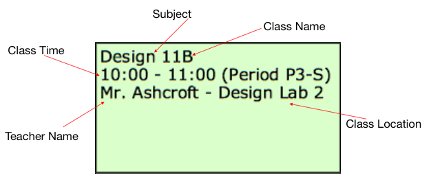
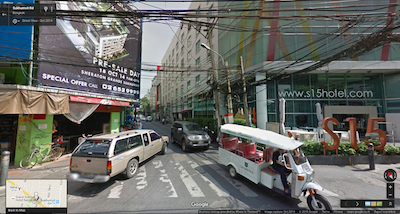
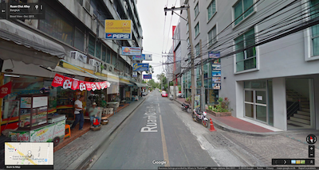
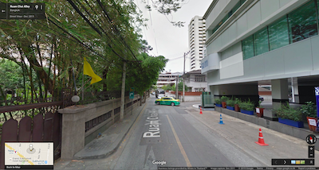
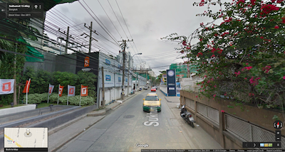
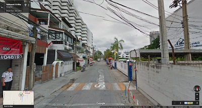
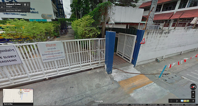

NIST username and password details
Student login details are stored on an online server, where they are synchronized for use by different software programs NIST offers. This means that your NIST login can be used to access the following:
- Veracross
- NIST Portal (portal2.nist.ac.th)
- Resource Portal
- NIST Library Website
However, School-issued Macbooks do not use the password server, and can be different from the NIST login.
Class Schedule and Locations
To find your class schedule, log onto
Veracross with your NIST username and password, and select
Current Class Schedule.
The schedule can be printed or downloaded as a PDF Document.
When you first look at your schedule, you will see that there are 5 class periods in one Day Rotation.
- For secondary students, one class period lasts 60 minutes.
- Class periods are represented by the colored blocks on your schedule.
- Each block lists the Subject, Class Name, Class Time, Teacher Name, and Location.

- It is advisable to get to class at least five minutes before time.
The Campus
The NIST Campus has a range of buildings where classes are conducted.
- Most secondary core classes (Mathematics, Sciences, Individuals and Societies, and English) are held at the Secondary building (Building 4).
- World language classes are located in Building 2.
- Design and Arts classes are in the Creative Arts Building (CAB).
- Health and Physical Education classes are in or around the Sports Complex, venues ranging from the Sports Field to the Dance Room depending on the unit.
NIST Cafeteria Menu
The NIST Catering Menu for the month is available at the
NIST Cafeteria Page. However, due to ingredients varying in availability throughout the month, some parts of the menu may be modified without prior notice.
BTS
NIST is accessible to pedestrians via the Asoke BTS station. A shuttle to School is available in the mornings, for an easier commute. The shuttle can be found parked at the beginning of Soi 15, and is available for teachers as well as students.
When taking a BTS Skytrain, exit at the Asok station (E4), and leave through Exit #5. Follow the bridge and exit down the stairs in front of the Westin Hotel. Continue straight until you reach Sukhumvit Soi 15. Walk down Soi 15 until you see NIST on your right hand side.
MRT
Exit at Sukhumvit Station, and leave through Exit 5. Follow the bridge and exit down the stairs in front of the Westin Hotel. Enter Sukhumvit Soi 15, and walk down the street until you see the entrance to NIST.
BTS/MRT/Airport Rail Link Map
Click to enlarge the image.
Pedestrian Path via Sukhumvit Soi 15
When walking to NIST from Sukhumvit Soi 15, follow the road as in the images below.
Entrance to Sukhumvit Soi 15

Continue Straight

Continue Past the DREAM Hotel


NIST is on your right hand side.

Pedestrian Walkway

Personal Car
Enter at Sukhumvit Soi 15, and drive down Soi 15 until you see NIST on your right hand side. Two parking lots are avaiable near the NIST campus, and are available for cars and motorcycles.
Taxi/Motorbike Taxi
Instruct the Taxi/Motorbike driver to take you to Sukhumvit Soi 15 (In Thai: sook-hum-vit soy seep-ha), and continue down Soi 15 until you see NIST on your right.
Google Map
A Google Map is included for added convenience.
Printable Map in Thai and English
These printable Thai and English Maps are available for easy navigation to the school. They can also be found on the NIST website.
Quick Links for Daily Use